Loja de flores no Porto
Flores para oferecer, celebrar e agradecer.
Ramos, caixas de flores e decoração para casamentos e eventos, preparados na nossa loja em Aviz.
- Loja em Aviz, Boavista
- Entregas no Porto e arredores
- Também na Glovo e Bolt Food
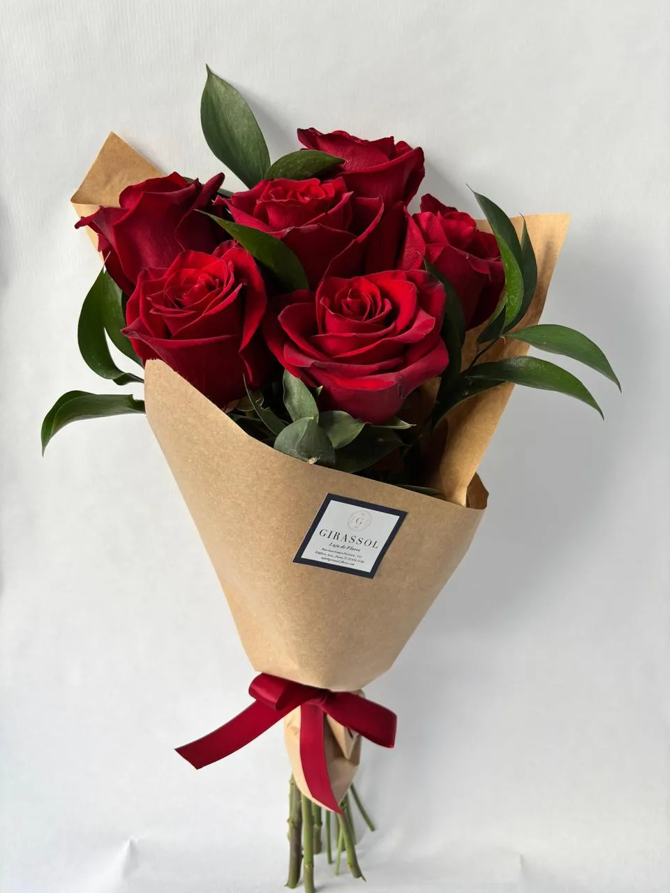
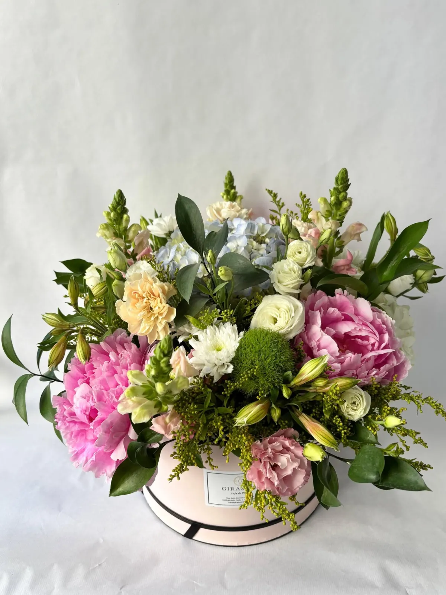
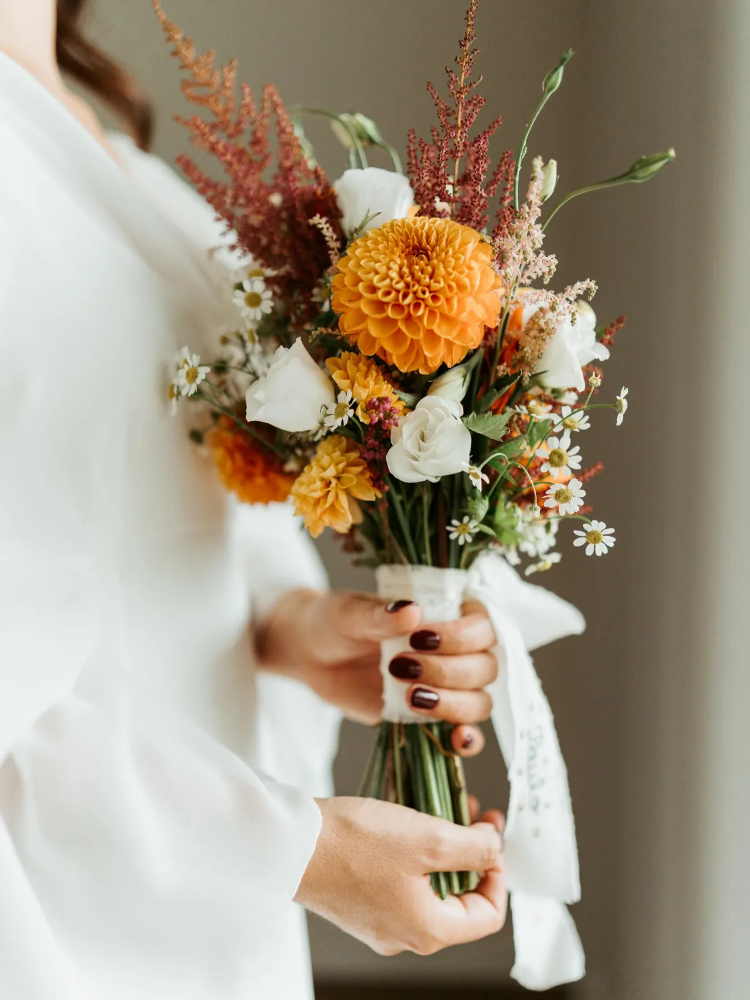
Escolhidas.Flores da época, escolhidas na loja.
Preparadas.Cada ramo é feito à mão, no Porto.
Entregues.Levante na loja ou receba no Porto e arredores.
Não sabe o que oferecer?
Nós ajudamos a escolher.
Diga-nos quanto quer gastar e sugerimos um ramo pelo WhatsApp.
Flower Box
Flores para ter em casa.
Caixas de flores prontas a pousar, sem jarra nem arranjos. Para oferecer ou para ficar consigo.
Pedir uma caixa de floresCasamentos e eventos
Decoração simples, com requinte.
Do bouquet da noiva à decoração das mesas, preparamos as flores do seu dia. Cada trabalho é feito à medida, com orçamento personalizado.
- Bouquet de noiva
- Bouquets para acompanhantes
- Flores para a cerimónia
- Centros de mesa
- Decoração de espaços e entrada
- Eventos e trabalhos corporativos
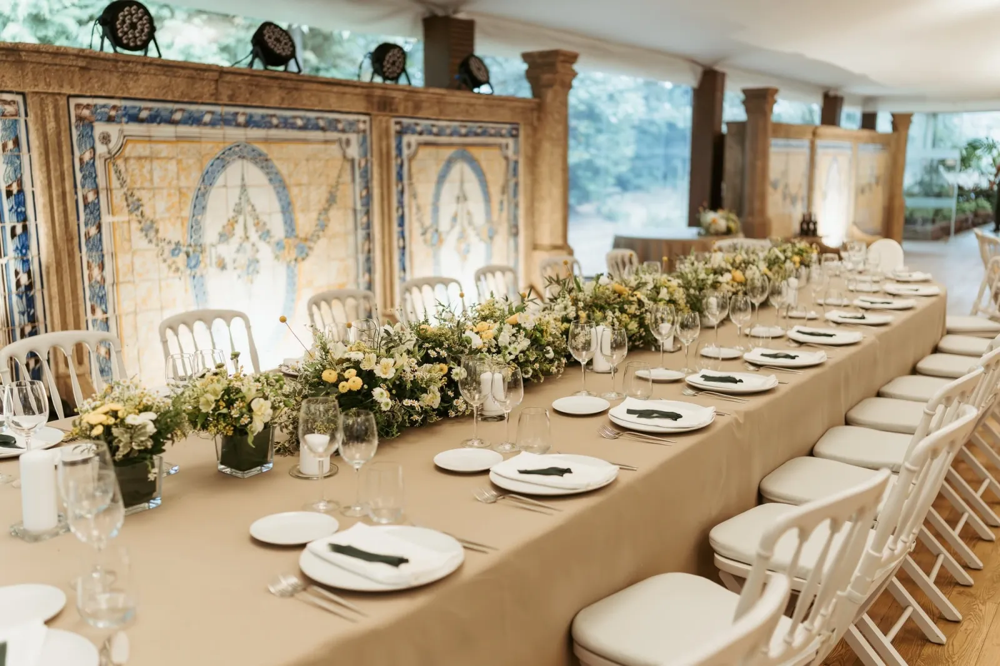
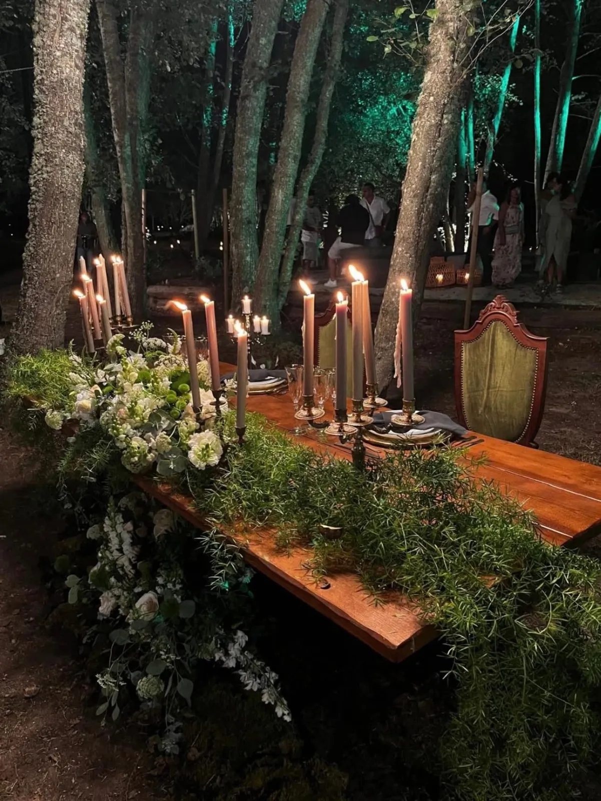
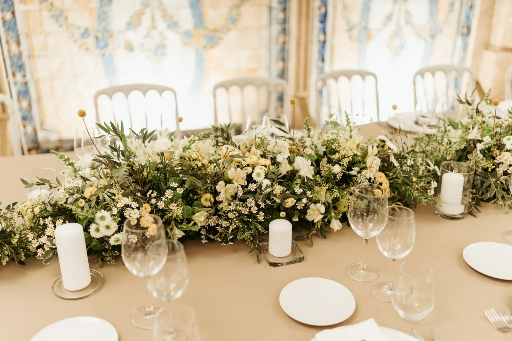
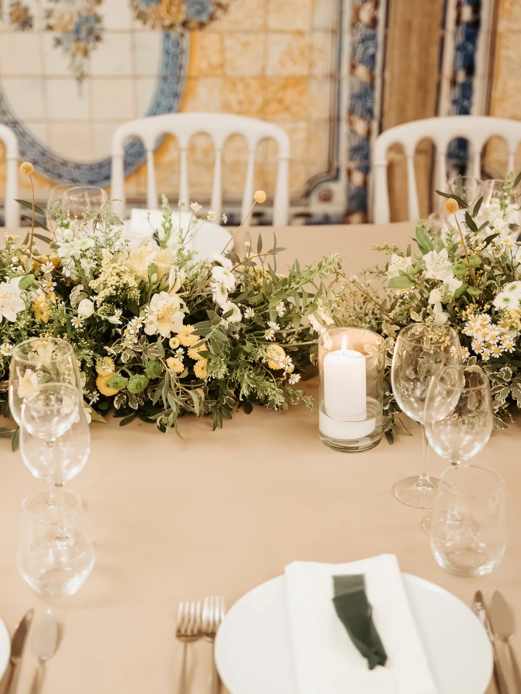
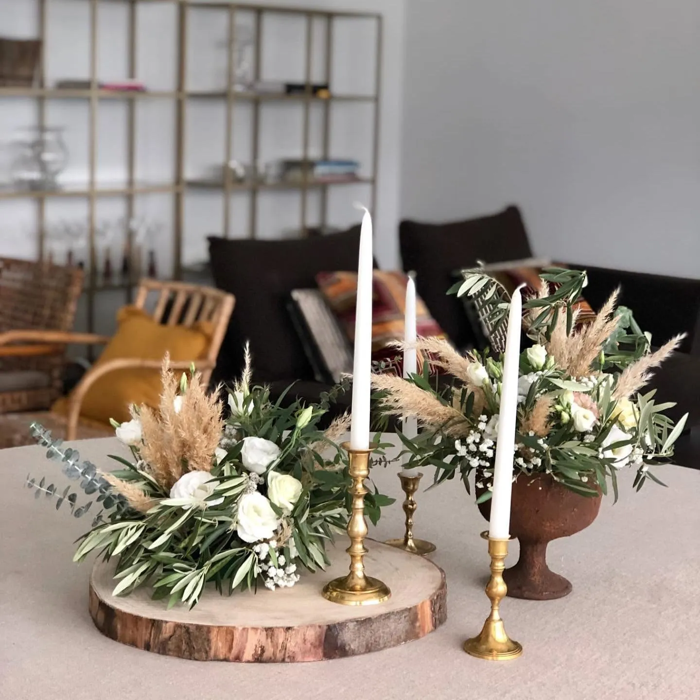
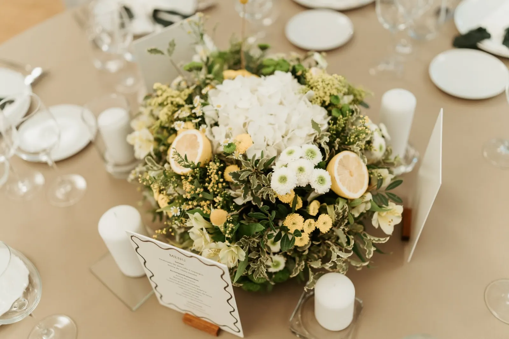
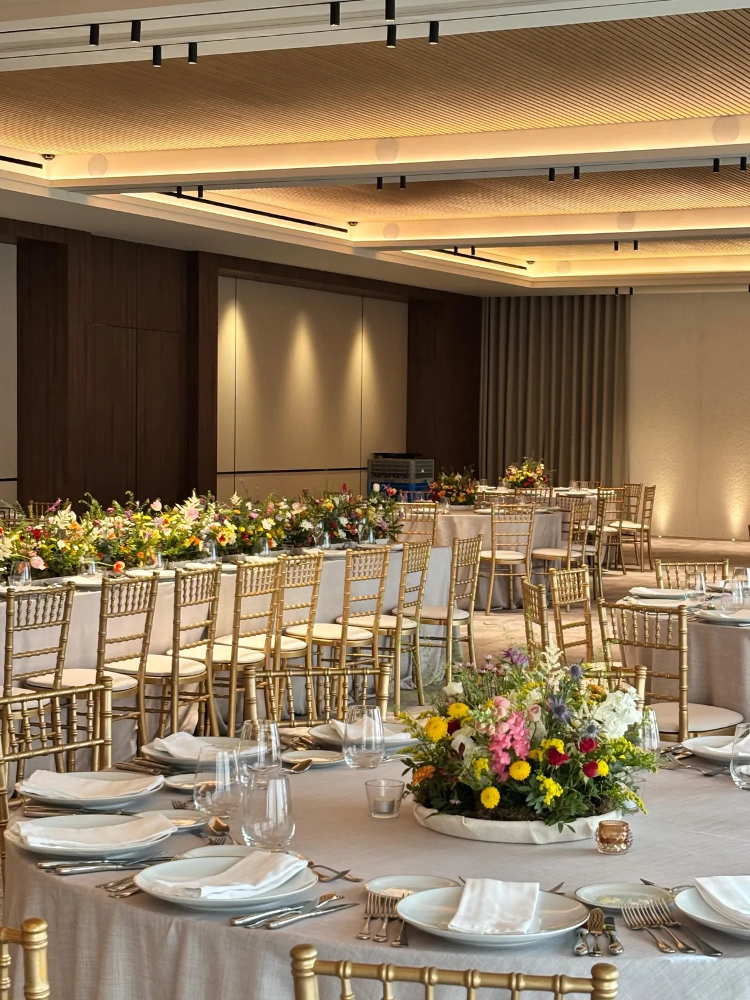
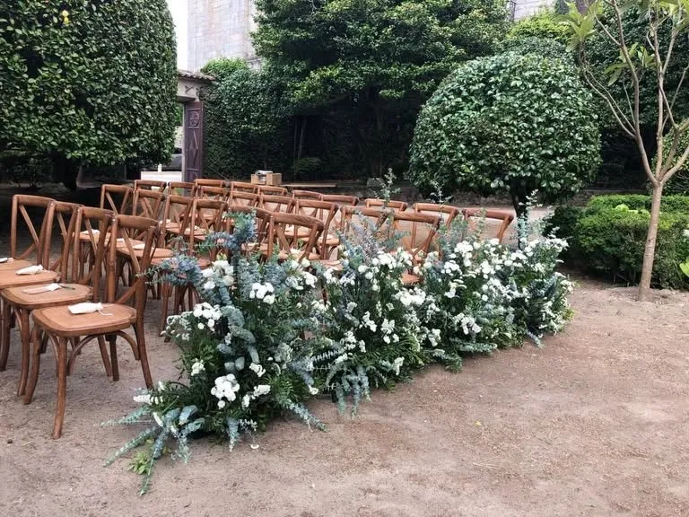
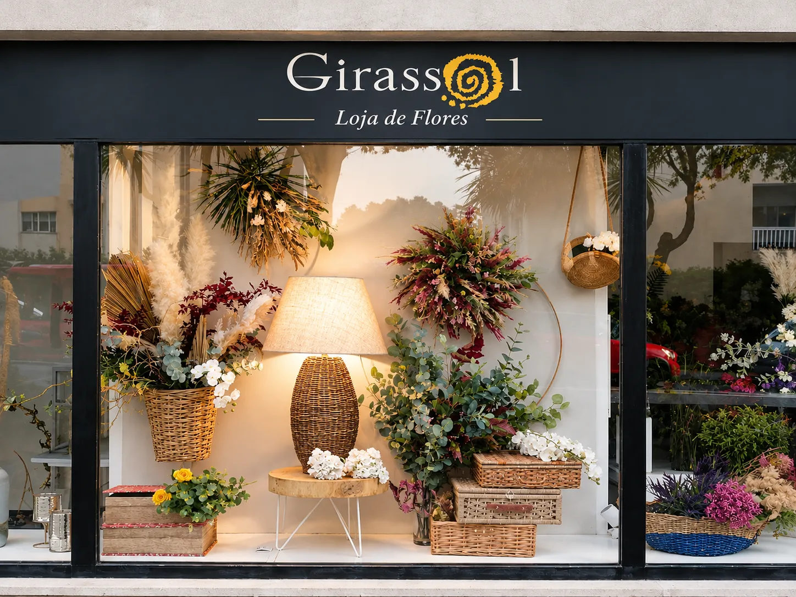
A loja
Mais de 45 anos no Porto.
Há mais de 45 anos, a Girassol dedica-se às flores. Uma história construída no Porto, entre ramos, flores de época, encomendas e trabalhos para casamentos e eventos.
Atendimento próximo
Ajudamos a escolher e adaptamos cada pedido ao que procura.
Flores da época
Trabalhamos com o que a estação tem de melhor.
Encomenda e entrega
Levante na loja ou receba no Porto e arredores.
O que dizem os clientes
Quem já encomendou
A Girassol é sem dúvida a loja de flores com mais bom gosto que há no Porto.
A encomenda foi realizada exatamente à hora marcada. O ramo era lindo.
Foi absolutamente impecável na amabilidade (…) Foi tudo perfeito! Recomendo e voltarei!
Simpatia e cordialidade no atendimento. Competência, eficiência e profissionalismo.
Como encomendar
Simples, pelo WhatsApp.
Escolha
Um ramo do site, um orçamento, ou apenas a ocasião.
Fale connosco
Confirmamos disponibilidade, flores e mensagem.
Levante ou receba
Na loja ou com entrega no Porto e arredores.
- Morada
- R. José Gomes Ferreira 111
4150-598 Porto - +351 935 481 981
- Entregas
- Porto e arredores — horários e condições sob consulta pelo WhatsApp
- Também em
- Glovo · Bolt Food · Instagram
- Horário da loja
| Segunda a sexta | 10:00–13:00 · 14:00–19:00 |
| Sábado | 10:00–13:00 · 15:00–19:00 |
| Domingo | Encerrado |